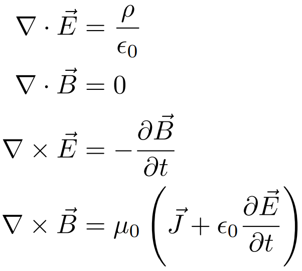
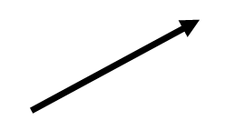

03/04/2022
Revisão de cálculo vetorial - Parte 1

Ao final do ciclo básico dos cursos relacionados a engenharia elétrica, o aluno foi apresentado às ferramentas matemáticas necessárias para um entendimento formal de diversos conceitos físicos que envolvem os fenômenos ligados a sua futura profissão. Quando o assunto é Eletromagnetismo, o cálculo vetorial é pedra angular. O cálculo vetorial fornece as ferramentas matemáticas necessárias para que físicos e engenheiros abordem problemas que envolvam geometria diferencial e equações diferenciais parciais. Além dos estudos sobre campos eletromagnéticos, também destacam-se as aplicações em campos gravitacionais e mecânica dos fluídos. As equações de Maxwell como mostradas na imagem utilizam duas operações em campos vetoriais, o divergente e o rotacional. Belo, não? Mas, o que tudo isso significa? Vamos por partes. No começo dessa revisão iremos abordar os vetores e as funções vetoriais.

O vetor e os campos vetorias são definidos formalmente através da álgebra linear. Aqui adotaremos
o conceito intuitivo de que o vetor é uma flecha no espaço. Um vetor possui magnitude, direção e sentido.
Um vetor


A soma de dois vetores 

Outro conceito importante de se relembrar é a diferença entre campos escalares e vetoriais no R3. Ambos campos representam funções e, de uma forma simples, uma função nada mais é do que um objeto que recebe uma entrada e retorna uma saída. Seja uma função f : R → R, ou seja, uma função que recebe números reais e retornam números reais, como por exemplo: f(x) = x2 + x - 6. Tais funções são amplamente abordadas nos cursos iniciais de matemática, mas essa ideia pode ser generalizada. Uma função também pode receber múltiplas entradas ou retornar vetores, os quais podem ser expressados por uma lista n de números.
Quando uma função recebe múltiplas entradas, é geralmente dito que esta função recebe um vetor. Os objetos de interesse são os campos escalares e vetorias no R3. Um campo escalar no R3 é uma função do tipo f : R3 → R, a qual recebe três números reais (basicamente, um vetor) e retorna um único número. Um exemplo de campo escalar é a função: f(x) = x2 + y2 + z2. De forma intuitiva, um campo escalar retorna um escalar. Esse tipo de função pode ser imaginada como um objeto que estabelece um número para cada ponto de um determinado espaço.
Em contraste, um campo vetorial no R3 é uma função F : R3 → R3, ou seja, uma função que recebe um vetor e retorna outro vetor. Um exemplo de uma função desse tipo é: r(t) = <2 cos t, 4 sin t, t>. Analogamente a um campo escalar, um campo vetorial pode ser imaginado como alocar um vetor em cada ponto de um determinado espaço.
Bom, por hoje é só. Semana que vem continuaremos com a parte 2 da revisão, onde abordaremos a multiplicação de vetores. Até mais, um abraço!